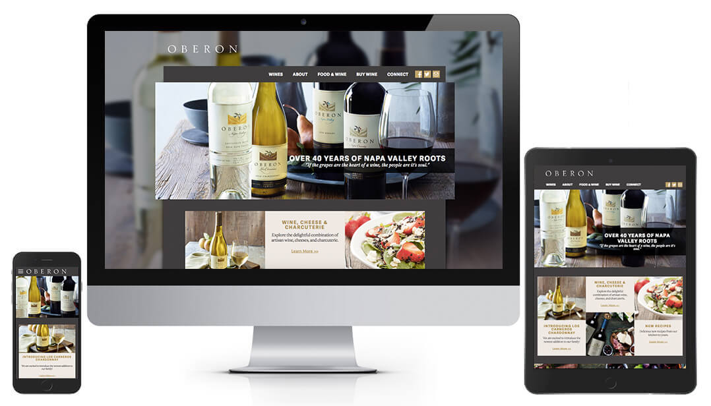
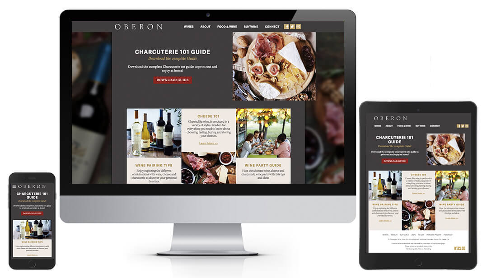
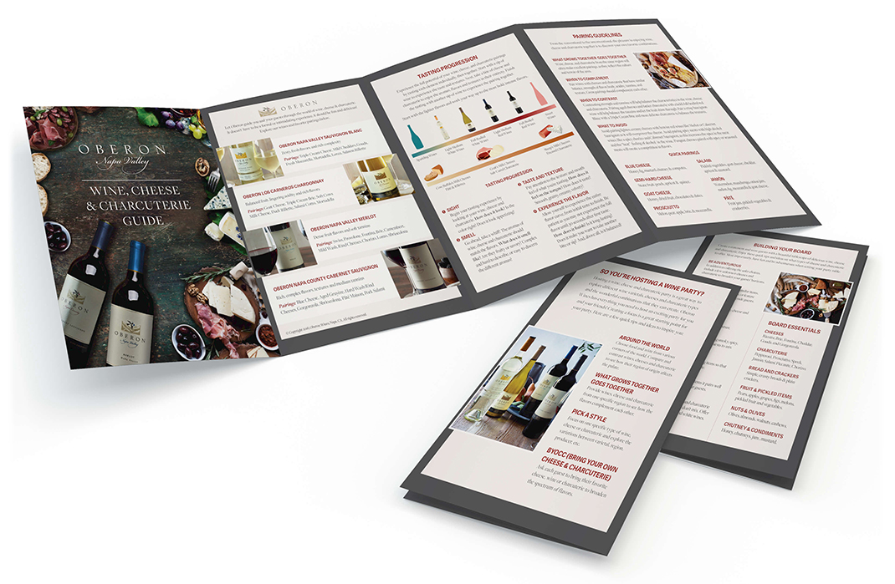

Oberon wanted a responsive website with an updated look that was inline with their brand identity. While the website was being redesigned we were incorporating elements of the new look into their social media and other programs.
The website design pulled away from the soft colors and parchment accents to bold areas of color and big images. The new website projects a more masculine brand.
While the website was being developed the Wine, Cheese and Charcuterie program was in progress. The program ads and point of sale material was a soft roll out of the new appearance.
 Visit the Website